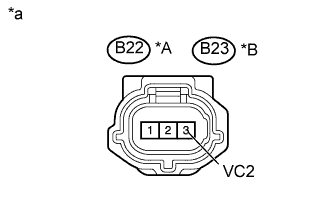
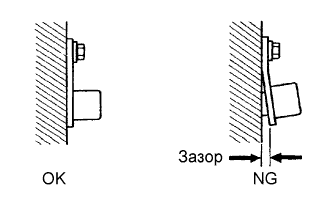

DTC P0365 Цепь датчика положения распредвала "B" (ряд 1) |
DTC P0367 Низкий уровень сигнала на входе цепи датчика положения распредвала "B" (ряд 1) |
DTC P0368 Высокий уровень сигнала на входе цепи датчика положения распредвала "B" (ряд 1) |
DTC P0390 Цепь датчика положения распредвала "B" (ряд 2) |
DTC P0392 Низкий уровень сигнала на входе цепи датчика положения распредвала "B" (ряд 2) |
DTC P0393 Высокий уровень сигнала на входе цепи датчика положения распредвала "B" (ряд 2) |
| № DTC | Условие обнаружения DTC | Неисправный участок |
| P0365 P0390 | Сигнал датчика положения распредвала выпускных клапанов отсутствует в течение 5 с при частоте вращения коленчатого вала двигателя 600 об/мин или более (логика диагностирования за 1 поездку). |
|
| P0367 P0392 | Выходное напряжение датчика положения распредвала выпускных клапанов (ряд 1, 2) составляет менее 0,3 В в течение 4 с (логика диагностирования за 1 поездку). |
|
| P0368 P0393 | Выходное напряжение датчика положения распредвала выпускных клапанов (ряд 1, 2) составляет более 4,7 В в течение 4 с (логика диагностирования за 1 поездку). |
|
| Параметр / Устройство | Описание |
| Название контактов ECM | Между EV1+ и VV1- или EV2+ и VV1- |
| Рабочий диапазон диагностического прибора | 5 В/дел., 20 мс/ дел. |
| Условие | Холостые обороты при прогретом двигателе |
| 1.ПРОВЕРЬТЕ ДАТЧИК ПОЛОЖЕНИЯ РАСПРЕДВАЛА ВЫПУСКНЫХ КЛАПАНОВ (ИСТОЧНИК ПИТАНИЯ ДАТЧИКА) |
|  |
Отсоедините разъем датчика положения распредвала.
Включите зажигание (IG).
Измерьте напряжение в соответствии со значениями, приведенными в таблице.
| Контакты для подключения диагностического прибора | Положение переключателя | Заданные условия |
| C22-3 (VC2) - масса | Зажигание включено (IG) | 4,5-5,5 В |
| C23-3 (VC2) - масса | Зажигание включено (IG) | 4,5-5,5 В |
| *A | Ряд 1 |
| *B | Ряд 2 |
| *a | Вид спереди разъема со стороны жгута проводов: (к датчику положения распредвала) |
Вновь подсоедините разъем датчика положения распредвала.
|
| ||||
| OK | |
| 2.ПРОВЕРЬТЕ ЖГУТ И РАЗЪЕМ (ДАТЧИК ПОЛОЖЕНИЯ РАСПРЕДВАЛА ВЫПУСКНЫХ КЛАПАНОВ - ECM) |
Отсоедините разъем датчика положения распредвала.
Отсоедините разъем ЭБУ.
Измерьте сопротивление в соответствии со значениями, приведенными в таблице ниже.
| Контакты для подключения диагностического прибора | Условие | Заданные условия |
| C22-1 (EX+) - C34-13 (EV1+) | Всегда | Менее 1 Ом |
| C22-2 (EX-) - C34-14 (EV1-) | Всегда | Менее 1 Ом |
| C23-1 (EX+) - D34-18 (EV2+) | Всегда | Менее 1 Ом |
| C23-2 (EX-) - C34-17 (EV2-) | Всегда | Менее 1 Ом |
| Контакты для подключения диагностического прибора | Условие | Заданные условия |
| C22-1 (EX+) или C34-13 (EV1+) - масса | Всегда | 10 кОм или более |
| C22-2 (EX-) или C34-14 (EV1-) - масса | Всегда | 10 кОм или более |
| C23-1 (EX+) или D34-18 (EV2+) - масса | Всегда | 10 кОм или более |
| C23-2 (EX-) или C34-17 (EV2-) - масса | Всегда | 10 кОм или более |
Вновь подсоедините разъем датчика положения распредвала.
Подсоедините разъем ECM.
|
| ||||
| OK | |
| 3.ПРОВЕРЬТЕ УСТАНОВКУ ДАТЧИКА ПОЛОЖЕНИЯ РАСПРЕДВАЛА ВЫПУСКНЫХ КЛАПАНОВ |
|  |
Проверьте установку датчика положения распредвала.
|
| ||||
| OK | |
| 4.ПРОВЕРЬТЕ ЗАДАЮЩИЙ РОТОР РАСПРЕДВАЛА ВЫПУСКНЫХ КЛАПАНОВ |
Проверьте задающий ротор распредвала выпускных клапанов.
|
| ||||
| OK | |
| 5.ЗАМЕНИТЕ ДАТЧИК ПОЛОЖЕНИЯ РАСПРЕДВАЛА ВЫПУСКНЫХ КЛАПАНОВ |
Замените датчик положения распредвала выпускных клапанов (Нажмите здесь).
| ДАЛЕЕ | |
| 6.ПРОВЕРЬТЕ, ВЫВОДЯТСЯ ЛИ DTC СНОВА (DTC P0365, P0367, P0368, P0390, P0392 И/ИЛИ P0393) |
Подсоедините портативный диагностический прибор к DLC3.
Включите зажигание (IG).
Включите портативный диагностический прибор.
Сбросьте коды DTC (Нажмите здесь).
Запустите двигатель.
Войдите в следующие меню: Powertrain / Engine and ECT / DTC.
Считайте коды DTC.
| Результат | Следующий шаг |
| Коды DTC не выводятся | А |
| DTC P0365, P0367, P0368, P0390, P0392 и/или P0393 выводятся | B |
|
| ||||
| А | ||
| ||
| 7.ПРОВЕРЬТЕ ЖГУТ И РАЗЪЕМ (ДАТЧИК ПОЛОЖЕНИЯ РАСПРЕДВАЛА ВЫПУСКНЫХ КЛАПАНОВ - ECM) |
Отсоедините разъем датчика положения распредвала.
Отсоедините разъем ЭБУ.
Измерьте сопротивление в соответствии со значениями, приведенными в таблице ниже.
| Контакты для подключения диагностического прибора | Условие | Заданные условия |
| C22-3 (VC2) - C34-14 (VCV1) | Всегда | Менее 1 Ом |
| C23-3 (VC2) - C34-16 (VCV2) | Всегда | Менее 1 Ом |
| Контакты для подключения диагностического прибора | Условие | Заданные условия |
| C22-3 (VC2) или C34-14 (VCV1) - масса | Всегда | 10 кОм или более |
| C23-3 (VC2) или C34-16 (VCV2) - масса | Всегда | 10 кОм или более |
Вновь подсоедините разъем датчика положения распредвала.
Подсоедините разъем ECM.
|
| ||||
| OK | ||
| ||